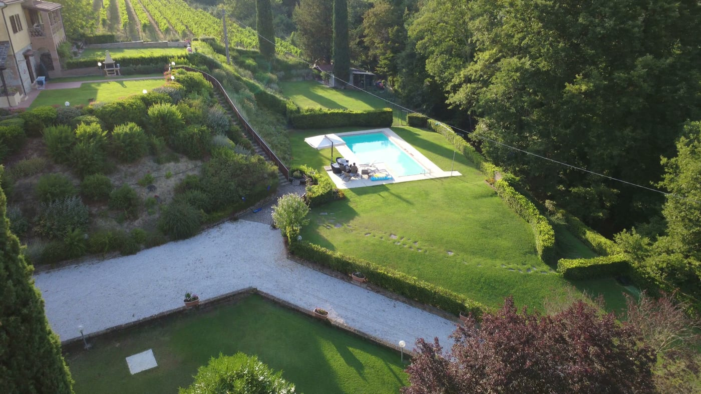
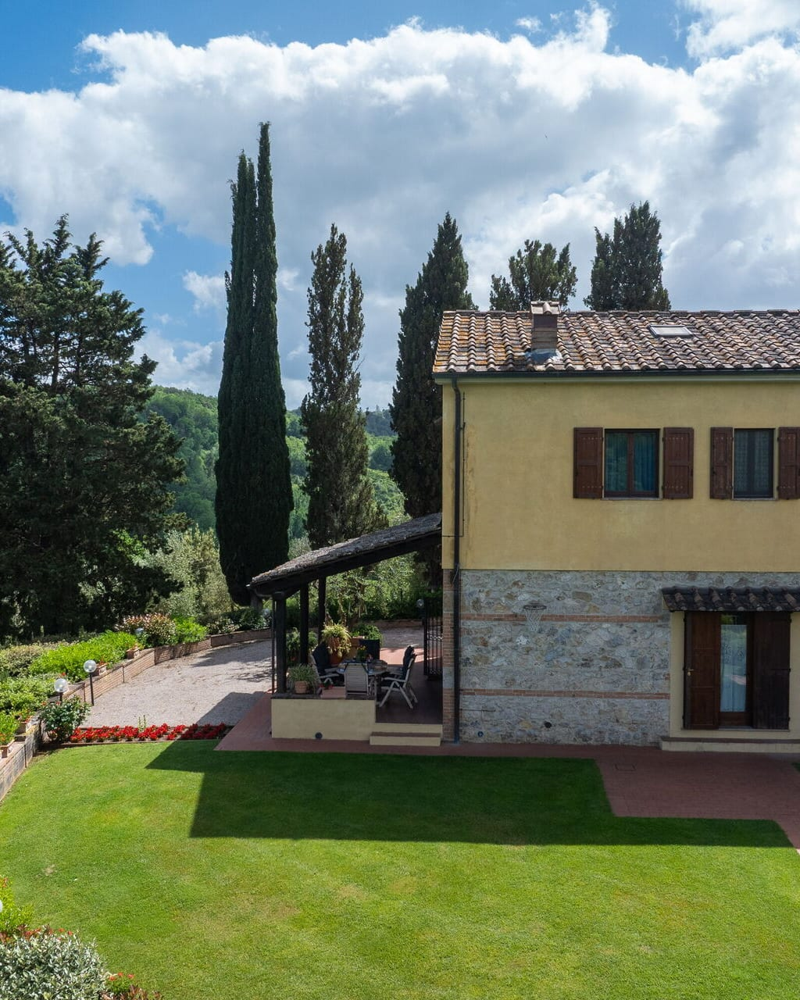
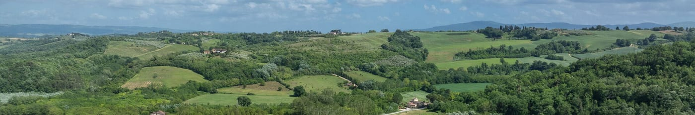
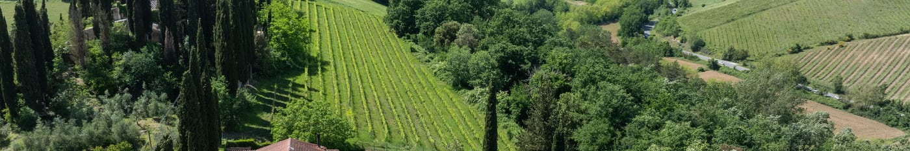
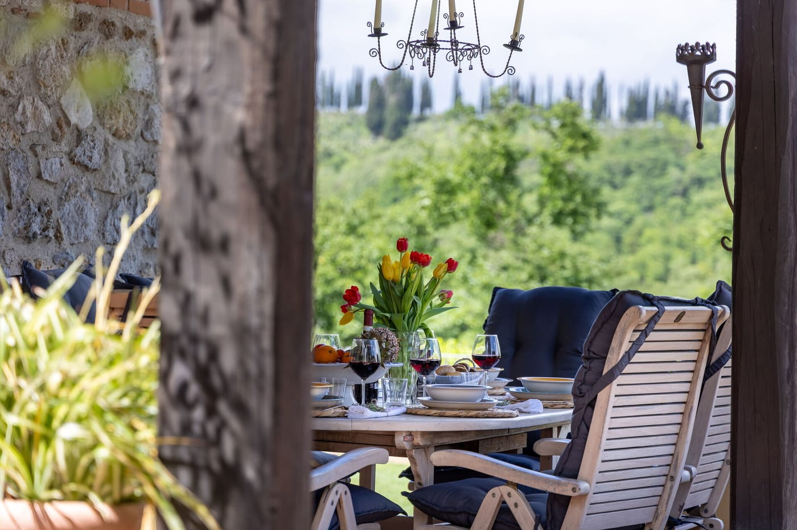

San Gimignano · Chianti · Toscana
Villa Sabrina
Una casa di campagna con piscina privata, che guarda le colline del Chianti

La casa
Cotto, mattone e legno, a cinque chilometri dalle torri
Villa Sabrina è una porzione di una villa di campagna, ristrutturata di recente e circondata dalle colline del Chianti. Si sviluppa su due piani, per 160 metri quadri.
Gli interni sono luminosi e arredati nello stile rustico toscano, con il cotto, il mattone e il legno lasciati a vista. Le tre camere hanno tutte l’aria condizionata.
I proprietari abitano nella porzione accanto, con ingresso separato, e sono a disposizione in caso di necessità. Si accede da una strada sterrata in buone condizioni.

Gli spazi
Cinque stanze, al chiuso e all’aperto
Il giardino è completamente recintato e riservato agli ospiti, e il porticato attrezzato è la stanza in più: ci si pranza e ci si cena all’aperto.
Servizi
Quello che c’è
Dintorni
Dove si arriva da qui
Come ci si arriva
L’indirizzo esatto arriva con la conferma della prenotazione, da Posarelli Villas, insieme alle indicazioni per l’ultimo tratto.
Galleria
La casa, il giardino, la vista
Clicca una foto per ingrandirla
Recensioni
Hai soggiornato a Villa Sabrina? Lascia una recensione su Posarelli Villas.
Le recensioni si lasciano dalla piattaforma dell’agenzia, dopo il soggiorno: se non hai prenotato tramite Posarelli Villas non troverai il modulo. Su questo sito non c’è nessun form.
Informazioni pratiche
Prima di partire
Arrivo e partenza
Arrivo tra le 17:00 e le 20:00, partenza tra le 08:00 e le 10:00.
Piscina
Aperta dal 15 aprile al 15 ottobre. Recintata, di uso esclusivo degli ospiti.
Incluso
- Biancheria da letto e da bagno, set iniziale
- Teli piscina
- Wi-Fi e aria condizionata
- Culla, su richiesta e senza costo
Regole della casa
- Animali accettati su richiesta
- Non si fuma all’interno
- Servizio di aiuto domestico su richiesta
Come si arriva
Si accede da una strada sterrata in buone condizioni. Parcheggio all’interno della proprietà.
I proprietari
Abitano nella porzione accanto, con ingresso indipendente, e sono a disposizione in caso di necessità.
Prezzi e disponibilità. Le tariffe cambiano con la stagione e la durata del soggiorno, e alcune voci si saldano sul posto. Per il preventivo aggiornato e il calendario fa fede la scheda ufficiale di Posarelli Villas, che gestisce le prenotazioni.


Disponibilità
Le date libere sono sulla scheda ufficiale
Calendario, tariffe e richieste passano da Posarelli Villas, che commercializza la casa.
Prezzi e disponibilità